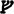

STREICHER
Frodo, Sam und Pippin gingen zurück ins Hinterzimmer. Es brannte kein Licht dort. Merry war nicht da, und das Kaminfeuer schwelte nur noch. Erst, als sie die Glut angeblasen und Kleinholz nachgelegt hatten, merkten sie, dass Streicher mitgekommen war. Er saß still auf einem Stuhl an der Tür.
»Hallo!«, sagte Pippin. »Wer sind Sie denn, und was wollen Sie?«
»Man nennt mich Streicher«, antwortete er, »und Ihr Freund hat mir versprochen, es aber vielleicht vergessen, dass wir noch in aller Stille miteinander reden könnten.«
»Sie sagten, ich könnte etwas erfahren, das für mich von Vorteil wäre, glaube ich«, sagte Frodo. »Was haben Sie mir zu sagen?«
»Verschiedenes«, antwortete Streicher. »Aber natürlich hat alles seinen Preis.«
»Wie meinen Sie das?«, fragte Frodo scharf.
»Erschrecken Sie nicht! Ich meine es so: Ich sage Ihnen, was ich weiß, und einiges an gutem Rat dazu – doch dafür erwarte ich eine Belohnung.«
»Und was soll das bitte sein?«, sagte Frodo. Er vermutete nun, es mit einem Gauner zu tun zu haben, und dachte besorgt daran, dass er nur wenig Geld mitgenommen hatte. Die ganze Summe würde kaum ausreichen, sich den Schuft vom Halse zu schaffen, und er konnte nichts davon entbehren.
»Nichts, das Sie sich nicht leisten können«, antwortete Streicher mit einem bedächtigen Lächeln, als hätte er Frodos Gedanken gelesen. »Nur so viel: Sie müssen mich auf Ihre Reise mitnehmen, bis ich mich freiwillig von Ihnen trenne.«
»Ach was!«, sagte Frodo, überrascht, aber kaum erleichtert. »Selbst wenn ich noch einen Begleiter brauchte, würde ich mich auf dergleichen nicht einlassen, bevor ich nicht sehr viel mehr über Sie und Ihre Absichten wüsste.«
»Ausgezeichnet!«, rief Streicher, schlug die Beine übereinander und lehnte sich behaglich zurück. »Es scheint, Sie kommen wieder zur Besinnung, und das ist nur gut so. Bisher waren Sie viel zu leichtsinnig. Sehr gut! Also sage ich Ihnen, was ich weiß, und überlasse es Ihnen, über meine Belohnung zu befinden. Sie werden Sie mir mit Freuden gewähren, wenn Sie mich erst angehört haben.«
»Also fangen Sie an!«, sagte Frodo. »Was wissen Sie?«
»Zu viel über zu viele dunkle Geschichten«, sagte Streicher grimmig. »Aber was Ihre Angelegenheit angeht …« Er stand auf, ging zur Tür, öffnete sie rasch und sah hinaus. Dann schloss er sie leise und setzte sich wieder. »Ich habe scharfe Ohren«, sagte er mit gedämpfter Stimme, »und wenn ich mich auch nicht unsichtbar machen kann, so habe ich es doch schon mit vielen wilden und wachsamen Kreaturen zu tun gehabt und kann es meistens vermeiden, gesehen zu werden, wenn ich nicht gesehen werden will. Heute Abend nun steckte ich hinter den Bäumen an der Straße westlich von Bree, als vier Hobbits von den Höhen kamen. Ich muss wohl nicht alles wiederholen, was Sie mit dem alten Bombadil oder miteinander geredet haben; aber eines hat mich interessiert. Bitte denkt dran, hat einer von Ihnen gesagt, dass der Name Beutlin auf keinen Fall erwähnt werden darf. Ich bin Herr Unterberg, wenn schon ein Name genannt werden muss. So sehr hat mich das interessiert, dass ich Ihnen bis hierher gefolgt bin. Dicht hinter Ihnen bin ich unbemerkt übers Tor geklettert. Herr Beutlin mag einen achtbaren Grund haben, seinen Namen hinter sich zu lassen, doch dann würde ich ihm und seinen Freunden raten, vorsichtiger zu sein.«
»Ich wüsste nicht«, sagte Frodo gereizt, »warum mein Name irgendwen in Bree etwas angehen sollte, und ich müsste erst noch erfahren, was er Sie angeht. Herr Streicher mag einen achtbaren Grund haben, zu horchen und zu spionieren, doch dann würde ich ihm raten, ihn mir zu erklären.«
»Gute Antwort!«, sagte Streicher lachend. »Aber die Erklärung ist einfach. Ich hielt Ausschau nach einem Hobbit namens Frodo Beutlin. Ich wollte ihn schnell finden. Ich hatte erfahren, dass er ein … nun, sagen wir, ein Geheimnis aus dem Auenland fortträgt, das mich und meine Freunde angeht.«
»Nun, missverstehn Sie mich nicht!«, rief er, als Frodo aufstand und Sam von seinem Stuhl hochsprang und ihm drohende Blicke zuwarf. »Ich werde Ihr Geheimnis besser hüten als Sie selbst. Und gehütet muss es werden.« Er beugte sich vor und sah sie an. »Achtet auf jeden Schatten!«, sagte er mit leiser Stimme. »Schwarze Reiter sind durch Bree gekommen. Am Montag soll einer den Grünweg von Norden heruntergekommen sein und etwas später einer, auch auf dem Grünweg, von Süden.«
Eine Weile schwiegen sie. Dann sagte Frodo zu Pippin und Sam: »Ich hätte es mir denken können, nach dem Empfang, den uns der Torwächter bereitet hat. Und der Wirt scheint auch etwas gehört zu haben. Warum hat er uns zugeredet, zu den Gästen in der Schankstube zu gehen? Und warum in allen Auen haben wir solche Dummheiten gemacht? Wir hätten doch ganz ruhig hier sitzen bleiben können.«
»Das wäre besser gewesen«, sagte Streicher. »Ich hätte Sie von der Schankstube fern gehalten, aber der Wirt ließ mich nicht zu Ihnen herein und wollte Ihnen auch keine Nachricht von mir bringen.«
»Glauben Sie, er …?«, fragte Frodo.
»Nein, dem alten Butterblüm traue ich nichts Schlimmes zu. Er hat nur etwas gegen geheimnisvolle Landstreicher wie mich.« Frodo schaute ihn zweifelnd an. »Nun ja, ich sehe nicht gerade Vertrauen erweckend aus, oder?«, sagte er mit einem verkniffenen Grinsen und einem seltsamen Glanz in den Augen. »Aber ich hoffe, wir werden uns noch näher kennen lernen. Und dann werden Sie mir hoffentlich erklären, was da am Ende Ihres Lieds passiert ist. Denn dieser kleine Scherz …«
»Das war ein reiner Zufall«, unterbrach ihn Frodo.
»Ich weiß nicht«, sagte Streicher. »Meinetwegen ein Zufall. Dieser Zufall hat Sie in eine gefährliche Lage gebracht.«
»Kaum gefährlicher, als sie schon war«, sagte Frodo. »Ich wusste ja, dass diese Reiter hinter mir her waren. Aber nun scheint es jedenfalls, dass sie mich verpasst haben und fortgeritten sind.«
»Darauf dürfen Sie nicht zählen«, sagte Streicher heftig. »Die kommen wieder. Und noch mehr werden kommen. Es gibt noch weitere. Ich kenne ihre Zahl. Ich kenne diese Reiter.« Er schwieg, und sein Blick wurde hart und kalt. »Und es gibt auch Leute in Bree, denen nicht zu trauen ist«, fuhr er fort. »Lutz Farnrich zum Beispiel. Er hat einen schlechten Ruf im Breeland, und sehr komische Leute gehen bei ihm aus und ein. Sie müssen ihn unter den Gästen bemerkt haben: ein dunkelhäutiger Kerl, das Gesicht eine höhnische Grimasse. Er hat immerzu mit einem Fremden aus dem Süden die Köpfe zusammengesteckt, und gleich nach Ihrem ›Zufall‹ haben sie sich zusammen davongemacht. Manche von diesen Südländern führen nichts Gutes im Schilde; und was diesen Farnrich angeht, der würde für Geld alles tun – oder vielleicht sogar aus purer Schadenfreude.«
»Was sollte Farnrich tun, und was könnte der Zufall von vorhin ihn angehen?«, sagte Frodo, immer noch entschlossen, Streichers Andeutungen nicht verstehen zu wollen.
»Über Sie Auskunft geben, natürlich«, antwortete Streicher. »Ein Bericht über Ihren Auftritt in der Schankstube wäre für gewisse Leute höchst interessant. Danach hätten die es kaum mehr nötig, Ihren wirklichen Namen zu erfahren. Nur allzu wahrscheinlich werden diese Herren davon hören, ehe die Nacht um ist. Genügt das? Mit meiner Belohnung halten Sie es, wie Sie wollen: Nehmen Sie mich als Reiseführer an oder nicht! Doch ich darf sagen, dass ich alle Lande zwischen dem Auenland und dem Nebelgebirge kenne, denn ich habe sie viele Jahre lang durchstreift. Ich bin älter, als ich aussehe. Ich kann Ihnen nützlich sein. Nach dem Vorfall heute Abend werden Sie die offene Straße verlassen müssen, denn da werden die Reiter Tag und Nacht wachen. Vielleicht kommen Sie aus Bree heraus, und man lässt Sie unbehelligt ziehen, solange die Sonne am Himmel steht; aber weit würden Sie nicht kommen. Irgendwann haben sie euch, an einem finstern Ort in der Wildnis, wo es keine Hilfe gibt. Wollt ihr, dass sie euch finden? Sie sind entsetzlich.«
Die Hobbits schauten ihn an und sahen mit Erstaunen, dass sein Gesicht wie von Schmerz verzerrt war und dass er mit den Händen die Armlehnen des Stuhls umklammert hielt. Im Zimmer war es nun ganz still, und das Licht schien trüb geworden zu sein. Eine Weile saß er mit blicklosen Augen da, als hinge er einer alten Erinnerung nach oder horche auf nächtliche Laute aus weiter Ferne.
»Also!«, rief er dann und strich sich mit der Hand über die Stirn. »Ich weiß vielleicht mehr über diese Verfolger als ihr. Ihr fürchtet euch vor ihnen, aber ihr fürchtet euch nicht genug. Morgen werdet ihr ihnen entkommen müssen. Streicher kann euch Wege führen, die selten begangen werden. Wollt ihr ihn als Führer?«
Ein lastendes Schweigen trat ein. Frodo gab keine Antwort; Furcht und Zweifel verwirrten ihm den Sinn. Sam sah stirnrunzelnd seinen Master an, und schließlich platzte es aus ihm heraus: »Wenn du gestattest, Herr Frodo, ich würde nein sagen. Dieser Streicher hier warnt uns und sagt, seid bloß vorsichtig! – und ich würde sagen, ja, richtig, und da machen wir mit ihm gleich den Anfang! Er kommt aus der Wildnis, und dass von da was Gutes kommt, hab ich noch nie gehört. Er weiß allerhand, mehr, als mir lieb ist, so viel ist klar, aber das ist kein Grund, uns von ihm an irgendeinen finstern Ort führen zu lassen, wo es keine Hilfe gibt, wie er ja selbst sagt.«
Pippin rutschte auf seinem Stuhl herum und schien nicht zu wissen, was er sagen sollte. Streicher gab Sam keine Antwort, sondern richtete seinen bohrenden Blick auf Frodo. Frodo wandte die Augen ab. »Nein«, sagte er langsam. »Nein, ich bin nicht einverstanden. Ich finde, ich finde, Sie sind nicht wirklich, wofür Sie gehalten werden möchten. Zuerst haben Sie mit mir geredet wie einer von den Breeländern, aber nun hat sich Ihr Ton geändert. Jedenfalls scheint mir, dass Sam so weit Recht hat: Ich verstehe nicht, warum Sie uns zur Vorsicht raten und zugleich verlangen, dass wir Ihnen blindlings vertrauen. Sie kommen mir verkleidet vor – warum? Wer sind Sie? Was wissen Sie wirklich über … über meine Angelegenheit, und woher wissen Sie es?«
»Die Lektion in Vorsicht haben Sie gut gelernt«, sagte Streicher mit grimmigem Lächeln. »Aber Vorsicht ist eines und Unentschlossenheit etwas anderes. Auf eigene Faust kommen Sie jetzt nie nach Bruchtal; eine Chance haben Sie nur, wenn Sie mir vertrauen. Sie müssen sich entschließen. Manche Fragen kann ich beantworten, wenn Ihnen das dabei hilft. Aber warum sollten Sie meiner Erzählung Glauben schenken, wenn Sie mir noch nicht vertrauen? Trotzdem, hier ist sie …«
In diesem Augenblick klopfte es an die Tür. Herr Butterblüm kam und brachte Kerzen mit, gefolgt von Nob mit Kannen voll heißem Wasser. Streicher zog sich in eine dunkle Ecke zurück.
»Ich wollte Ihnen noch eine gute Nacht wünschen«, sagte der Wirt und stellte die Kerzen auf den Tisch. »Nob, bring das Wasser auf die Zimmer!«, sagte er zu dem Diener, der draußen geblieben war. Dann machte er die Tür zu.
»Also, das ist so«, begann er zögernd und mit besorgter Miene. »Wenn ich was verbockt habe, das täte mir ehrlich leid. Aber eins jagt immer das andere, wie Sie ja wissen, und ich hab so viel um die Ohren! Aber diese Woche, da kam eins zum andern, und das hat meinem Gedächtnis dann doch auf die Sprünge geholfen, und hoffentlich nicht zu spät! Man hat mich nämlich gebeten, nach Hobbits aus dem Auenland Ausschau zu halten, und besonders nach einem namens Beutlin.«
»Und was soll das mit mir zu tun haben?«, fragte Frodo.
»Ach, das werden Sie schon am besten wissen«, sagte der Wirt verständnisinnig. »Ich werde Sie nicht verraten; aber man hat mir gesagt, dieser Herr Beutlin würde unter dem Namen Unterberg reisen, und die Beschreibung, die man mir gegeben hat, passt ziemlich genau auf Sie, wenn ich das sagen darf.«
»Na so was! Dann lassen Sie uns die Beschreibung mal hören!«, sagte Frodo, ihn unklugerweise unterbrechend.
»Ein rundliches kleines Kerlchen mit roten Backen«, sagte Herr Butterblüm feierlich. Pippin kicherte, aber Sam schaute entrüstet drein. »Das wird dir nicht viel nützen, Gerstel, denn das trifft auf die meisten Hobbits zu, sagt er zu mir«, fuhr Herr Butterblüm mit einem Blick auf Pippin fort, »aber dieser eine ist größer als manche andern, hellhäutiger als die meisten und mit Kinnfurche, ein aufgewecktes Kerlchen mit wachen Augen – bitte um Verzeihung, sagt er, nicht ich.«
»Er hat das gesagt? Und wer war er?«, sagte Frodo gespannt.
»Ach, das war Gandalf, wenn Sie den auch kennen. Zauberer soll er sein, heißt es, aber er ist ein guter Freund von mir, kann man nicht anders sagen. Nur weiß ich nicht, was er jetzt mit mir anstellen wird, wenn ich ihn das nächste Mal sehe; könnte mir alles Bier sauer werden lassen oder mich in einen Holzklotz verwandeln, würde mich nicht wundern! Er kann sehr heftig werden! Trotzdem, was geschehen ist, ist nun mal geschehen.«
»Und was ist denn nun geschehen?«, sagte Frodo, der bei der langsamen Aufdröselung von Butterblüms Gedanken allmählich die Geduld verlor.
»Wo war ich doch gleich?«, sagte der Wirt und haschte fingerschnalzend nach seiner Erinnerung. »Ach so, der alte Gandalf! Drei Monate ist’s her, da kommt er ohne anzuklopfen in mein Zimmer reinspaziert. Gerstel, sagt er, ich muss morgen früh fort. Tust du mir einen Gefallen? Musst nur sagen, welchen, sag ich. Ich bin in Eile, sagt er, und hab keine Zeit, hinzugehn, aber ich möchte eine Nachricht ins Auenland schicken. Weißt du jemanden, der sie hinbringen kann und auf den Verlass ist? Ich werde schon jemanden finden, sag ich, vielleicht morgen oder übermorgen. Bitte morgen! sagt er, und dann hat er mit einen Brief gegeben.
Die Adresse steht ganz deutlich drauf«, sagte Herr Butterblüm und zog den Brief aus der Tasche. Langsam und genüsslich las er die Adresse vor (er legte viel Wert auf seinen Ruf als lesekundiger Mensch):
»Ein Brief von Gandalf an mich!«, rief Frodo.
»Aha!«, sagte Herr Butterblüm. »Also ist Beutlin Ihr richtiger Name?«
»Jawohl«, sagte Frodo, »und nun geben Sie den Brief aber sofort her, und erklären Sie mir, warum Sie ihn nicht abgeschickt haben! Das ist es doch wohl, was Sie mir sagen wollten – obwohl es elend lange gedauert hat, bis Sie zur Sache kamen.«
Der arme Herr Butterblüm schaute sehr betrübt drein. »Sie haben ganz Recht«, sagte er, »und ich bitte um Verzeihung. Und ich habe eine Sterbensangst, was Gandalf wohl sagen wird, wenn ein Schaden daraus entsteht. Aber ich hab den Brief nicht mit Absicht zurückgehalten. Ich hab ihn erst mal sicher verwahrt, und dann fand ich niemanden, der bereit war, gleich am nächsten Tag ins Auenland zu gehn, am übernächsten auch nicht, und von meinen Leuten konnte ich niemand entbehren, und so kam eins ums andere dazwischen, bis ich’s ganz vergessen hatte. Ich hab ja so viel um die Ohren! Ich will tun, was ich kann, um es wieder gutzumachen, und wenn ich Ihnen mit irgendwas behilflich sein kann, müssen Sie’s nur sagen.
Das hatte ich Gandalf sowieso versprochen, ganz abgesehen von dem Brief. Gerstel, hat er zu mir gesagt, dieser Freund von mir aus dem Auenland, der kommt vielleicht schon bald hier vorbei, er und noch einer. Er wird sagen, er heißt Unterberg, denk daran! Aber du brauchst keine Fragen zu stellen. Und wenn ich nicht bei ihm bin, kann es sein, dass er Probleme hat und Hilfe braucht. Tu für ihn, was du kannst, und ich werde dir’s danken, hat er gesagt. Und da seid ihr nun, und die Probleme scheinen auch nicht weit weg zu sein.«
»Wie meinen Sie das?«, fragte Frodo.
»Diese schwarzen Männer«, sagte der Wirt und senkte die Stimme. »Die suchen nach Beutlin, und wenn die was Gutes im Schilde führen, dann will ich ein Hobbit sein. Das war am Montag, da fingen plötzlich die Hunde alle zu winseln an, und die Gänse haben gezischt. Unheimlich! hab ich gesagt. Nob, der kommt rein und sagt mir, da sind zwei schwarze Männer an der Tür und fragen nach einem Hobbit namens Beutlin. Nob standen die Haare zu Berge. Ich hab zu den schwarzen Kerlen gesagt, macht, dass ihr fortkommt! und ihnen die Tür vor der Nase zugeknallt; aber dann, hab ich gehört, haben sie auf dem ganzen Weg bis Archet immer wieder nach Beutlin gefragt. Und der Streicher, dieser Waldläufer, der ist mir auch schon mit solchen Fragen gekommen. Wollte hier rein und mit Ihnen reden, bevor Sie auch nur einen Happen gegessen hatten, hat er verlangt!«
»Das hat er verlangt!«, sagte Streicher und trat unversehens ins Licht vor. »Und viel Ärger wäre uns erspart geblieben, wenn du ihn eingelassen hättest, Gerstenmann.«
Der Wirt zuckte vor Schreck zusammen. »Du!«, rief er. »Überall musst du deine Nase reinstecken! Was willst du denn hier?«
»Herr Streicher ist mit meiner Erlaubnis hier«, sagte Frodo. »Er ist gekommen, um mir seine Hilfe anzubieten.«
»Na, Sie müssen ja wissen, was Sie wollen«, sagte Herr Butterblüm und sah Streicher misstrauisch an. »Aber ich an Ihrer Stelle, wenn ich solche Probleme am Hals hätte, da würde ich mich nicht mit so einem Waldläufer einlassen.«
»Mit wem würdest du dich denn einlassen?«, fragte Streicher. »Mit einem dicken Gastwirt, der seinen eigenen Namen vergessen würde, wenn ihn die Leute nicht den ganzen Tag riefen? Sie können doch nicht für immer hier im Pony bleiben, und nach Hause gehn können sie auch nicht. Sie haben noch einen langen Weg vor sich. Willst du mit ihnen gehn und ihnen die schwarzen Kerle vom Leib halten?«
»Ich aus Bree fortgehn? Nicht für alles Geld!«, sagte Herr Butterblüm, dem der Schreck nun wirklich in die Glieder fuhr. »Aber warum können Sie nicht einfach in aller Ruhe eine Weile hier bleiben, Herr Unterberg? Was sind das alles für komische Geschichten? Was wollen diese schwarzen Männer von Ihnen, und wo kommen die her, möcht ich mal wissen?«
»Leider kann ich Ihnen das nicht alles erklären«, sagte Frodo. »Ich bin müde und sehr in Sorge, und es wäre eine lange Geschichte. Aber wenn Sie mir helfen wollen, muss ich Sie drauf hinweisen, dass auch Sie in Gefahr sind, solange ich in Ihrem Haus bin. Diese Schwarzen Reiter: ich weiß es nicht genau, aber ich denke, ich befürchte, sie kommen aus …«
»Sie kommen aus Mordor«, sagte Streicher mit leiser Stimme. »Aus Mordor, Gerstenmann, wenn dir das etwas sagt.«
»Bewahr uns!«, rief Herr Butterblüm und wurde ganz bleich; der Name war ihm offenbar bekannt. »Das ist die schlimmste Nachricht, die man in Bree je gehört hat, seit ich lebe.«
»Ja, freilich!«, sagte Frodo. »Sind Sie immer noch bereit, mir zu helfen?«
»Und ob!«, sagte Herr Butterblüm. »Nun erst recht! Nur weiß ich nicht, was einer wie ich machen kann gegen, gegen …«, stammelte er.
»Gegen den Schatten im Osten«, sagte Streicher ruhig. »Viel nicht, Gerstenmann, aber jedes bisschen kann uns helfen. Du kannst Herrn Unterberg heute Nacht als Herrn Unterberg Quartier geben und den Namen Beutlin vergessen, bis er weit fort ist.«
»Mach ich«, sagte Butterblüm. »Aber ich befürchte, die finden auch ohne mein Zutun heraus, dass er hier ist. Schade, dass Herr Beutlin heute Abend so viel Aufsehen erregt hat, um es gelinde auszudrücken. Die Geschichte, wie dieser Herr Bilbo verschwunden ist, hat man in Bree schon früher gehört. Sogar unser Nob, der kein allzu heller Kopf ist, hat sich sein Teil gedacht; und es gibt Leute in Bree, die schneller begreifen als er.«
»Da können wir nur hoffen, dass die Reiter nicht so bald wiederkommen«, sagte Frodo.
»Das hoff ich auch«, sagte Butterblüm. »Aber wenn sie auch hier herumspuken mögen, ins Pony kommen sie so schnell nicht rein. Nob wird kein Wort sagen. Bis zum Morgen habt ihr nichts zu befürchten. Keiner von den schwarzen Brüdern kommt mir über die Schwelle, solange ich noch auf den Beinen stehn kann! Ich und meine Leute, wir stehn heute Nacht Wache; ihr aber solltet noch ein Auge zutun, wenn ihr könnt.«
»Auf jeden Fall müssen wir beim Morgengrauen geweckt werden«, sagte Frodo. »Wir müssen so früh wie möglich aufbrechen. Frühstück bitte sechs Uhr dreißig.«
»Gut, ich lasse alles so richten«, sagte der Wirt. »Gute Nacht, Herr Beutlin – Unterberg, vielmehr! Gute Nacht – nanu, meine Güte, wo ist denn der Herr Brandybock?«
»Ich weiß nicht«, sagte Frodo, auf einmal sehr beunruhigt. Merry hatten sie ganz vergessen, und es wurde schon spät. »Ich fürchte, er ist noch draußen. Er sagte, er wollte noch Luft schnappen gehn.«
»Na, auf euch muss man schon aufpassen, kann man wohl sagen! Als ob ihr auf einer Vergnügungsreise seid!«, sagte Butterblüm. »Ich muss jetzt gehn und schnell die Türen verriegeln, sorge aber dafür, dass Ihr Freund eingelassen wird, wenn er kommt. Ich schicke mal lieber Nob los, ihn suchen. Gute Nacht Ihnen allen!« Endlich ging Herr Butterblüm hinaus, kopfschüttelnd und mit einem letzten skeptischen Blick auf Streicher. Seine Schritte entfernten sich auf dem Flur.
»Nun?«, sagte Streicher. »Wann gedenken Sie den Brief aufzumachen?« Frodo sah sich das Siegel genau an, bevor er es aufbrach; es war unverkennbar Gandalfs. Drinnen stand in des Zauberers schwungvoller, doch eleganter Handschrift die folgende Nachricht:
ZUM TÄNZELNDEN PONY, BREE. Am Mittjahrstag 1418 auenländischer Zeitrechnung
Lieber Frodo,
schlechte Nachrichten haben mich hier erreicht. Ich muss sofort weg. Geh lieber bald aus Beutelsend fort und sieh zu, dass du spätestens Ende Juli außer Landes bist. Ich komme zurück, sobald ich kann, und folge dir, wenn du dann schon fort bist. Hinterlasse Nachricht für mich, wenn du durch Bree kommst. Dem Wirt (Butterblüm) kannst du trauen. Vielleicht triffst du unterwegs einen Freund von mir: ein Mensch, schlank, groß, dunkelhaarig, von manchen Leuten Streicher genannt. Er weiß über unsere Sache Bescheid und wird dir helfen. Geh nach Bruchtal. Dort sehen wir uns hoffentlich wieder. Wenn ich nicht komme, wird Elrond dir Rat geben.
In aller Eile
Dein GANDALF 
PS. Benutze das Ding NICHT wieder, um keinen Preis! Reise nicht bei Nacht!
PPS. Vergewissere dich, dass es der richtige Streicher ist. Es gibt viele eigenartige Menschen auf den Straßen. Sein richtiger Name ist Aragorn.
Nicht jeder Verirrte verliert sich,
Nicht alles, was Gold ist, glänzt;
Die tiefe Wurzel erfriert nicht,
Was alt ist, wird nicht zum Gespenst.
Aus Schatten ein Licht entspringe!
Aus Asche soll Feuer loh’n!
Heil wird die zerbrochene Klinge,
Der Kronlose steigt auf den Thron.
PPPS. Ich hoffe, Butterblüm schickt dies prompt ab. Ein braver Mann, aber mit einem Gedächtnis wie eine Rumpelkammer: was man sucht, ist immer verschüttet. Wenn er’s vergisst, wasch ich ihm den Kopf. Lebe wohl!
Frodo las den Brief erst für sich, dann gab er ihn Pippin und Sam. »Da hat der alte Butterblüm etwas angerichtet!«, sagte er. »Die Kopfwäsche hat er verdient. Hätte ich dies gleich bekommen, säßen wir inzwischen alle sicher in Bruchtal. Aber was ist nur mit Gandalf? Er schreibt so, als müsste er sich in eine große Gefahr begeben.«
»Das tut er seit vielen Jahren«, sagte Streicher.
Frodo wandte sich zu ihm hin und schaute ihn fragend an, im Gedanken an Gandalfs zweiten Nachtrag. »Warum haben Sie mir nicht gleich gesagt, dass Sie ein Freund von Gandalf sind?«, sagte er. »Es hätte uns viel Zeit erspart.«
»Wirklich? Hätte denn einer von euch mir geglaubt?«, sagte Streicher. »Ich wusste nichts von diesem Brief. Ich wusste nur, wenn ich euch helfen wollte, musste ich versuchen, euer Vertrauen zu gewinnen, ohne irgendetwas beweisen zu können. Jedenfalls hatte ich nicht vor, euch gleich alles über mich zu sagen, ehe ich mir über euch im Klaren war. Der Feind hat mir schon öfter Fallen gestellt. Erst musste ich wissen, woran ich mit euch bin; dann hätte ich euch jede Frage beantwortet. Aber ich muss gestehen«, fügte er mit seltsamem Lachen hinzu, »ich hatte gehofft, ihr würdet mir um meiner selbst willen vertrauen. Ein Verfolgter wird manchmal des Argwohns müde und sehnt sich nach Freundschaft. Doch da spricht mein Äußeres wohl gegen mich.«
»In der Tat – auf den ersten Blick zumindest«, sagte Pippin, erleichtert auflachend, nachdem er Gandalfs Brief gelesen hatte. »Aber man sieht nichts Gutes, außer man tut es, wie wir im Auenland sagen; und ich denke, wir werden alle nicht sehr viel anders aussehn, wenn wir erst tagelang in Hecken und Gräben herumgelegen sind.«
»Ihr müsstet schon länger als ein paar Tage, Wochen oder Jahre durch die Wildnis streifen, ehe ihr aussähet wie Streicher«, antwortete er. »Und vorher kämt ihr um, wenn ihr nicht aus härterem Holz geschnitzt seid, als man euch ansieht.«
Pippin schwieg still, aber Sam war nicht eingeschüchtert und sah Streicher immer noch misstrauisch an. »Woher wissen wir, ob Sie der Streicher sind, von dem Gandalf spricht?«, wandte er ein. »Sie haben Gandalf nie erwähnt, ehe dieser Brief zum Vorschein kam. Soviel ich weiß, könnten Sie ebenso gut ein Spion sein, der uns etwas vormacht, um uns zum Mitkommen zu bewegen. Sie könnten den richtigen Streicher umgebracht und seine Kleidung angelegt haben. Was haben Sie dazu zu sagen?«
»Du bist mit allen Wassern gewaschen, Sam Gamdschie«, sagte Streicher, »aber darauf weiß ich leider nur eine Antwort: Wenn ich den echten Streicher umgebracht hätte, könnte ich auch dich umbringen. Und dann hätte ich es längst getan, ohne viel Gerede. Wenn ich hinter dem Ring her wäre, könnte ich ihn mir nehmen, gleich – JETZT!«
Er stand auf und schien plötzlich immer größer zu werden. Seine Augen leuchteten, bohrend und gebieterisch. Er warf den Mantel zurück und legte die Hand ans Heft eines Schwertes, das er verdeckt an der Seite getragen hatte. Sie wagten sich nicht zu rühren. Sam saß mit offenem Mund da und starrte ihn ratlos an.
»Aber zum Glück bin ich der echte Streicher«, sagte er, und plötzlich hatte er ein besänftigtes Lächeln im Gesicht und sah auf sie herab. »Ich bin Aragorn, Arathorns Sohn, und will mein Leben daran setzen, euch zu retten.«
Lange schwiegen sie alle. Dann ergriff Frodo zögernd das Wort. »Dass du ein Freund bist, glaubte ich schon, bevor ich den Brief bekam«, sagte er, »oder wenigstens wollte ich, dass du es seist. Du hast mich heute Abend mehrere Male erschreckt, aber niemals so, wie ich mir denke, dass die Knechte des Feindes es tun würden. Ich glaube, wenn du einer seiner Spione wärst – nun ja, du würdest dann vertrauenerweckender daherkommen, aber ich hätte kein gutes Gefühl, wenn du mich recht verstehst.«
»Ich verstehe«, sagte Streicher und lachte. »Ich sehe übel aus, aber du hast ein gutes Gefühl bei mir. Nicht alles, was Gold ist, glänzt, nicht jeder, der wandert, geht verlorn.«
»Geht es in diesen Versen denn um dich?«, fragte Frodo. »Ich hatte nicht begriffen, wovon darin die Rede war. Aber woher wusstest du, dass sie in Gandalfs Brief stehen, wenn du den nie gesehen hast?«
»Das wusste ich nicht«, antwortete er. »Aber ich bin Aragorn, und die Verse gehören zu meinem Namen.« Er zog sein Schwert aus der Scheide, und nun sahen sie, dass die Klinge wirklich einen Fuß unterm Heft abgebrochen war. »Nicht viel damit anzufangen, nicht wahr, Sam?«, sagte er. »Aber die Zeit ist nah, wo es neu geschmiedet wird.«
Sam sagte nichts.
»Nun«, sagte Streicher, »wenn Sam einverstanden ist, können wir die Sache als abgemacht ansehen. Streicher wird euch führen. Morgen haben wir ein hartes Stück Weges vor uns. Selbst wenn wir aus Bree ungehindert hinauskommen, unbemerkt wird es kaum bleiben. Aber dann werde ich zusehen, dass wir so schnell wie möglich verschwinden. Ich kenne außer der Hauptstraße noch ein paar andere Wege, die aus dem Breeland hinausführen. Wenn wir die Verfolger einmal abgeschüttelt haben, halten wir auf die Wetterspitze zu.«
»Wetterspitze?«, sagte Sam. »Was ist das?«
»Ein Berg, gleich nördlich der Straße, etwa auf halbem Weg zwischen Bree und Bruchtal. Von dort hat man eine weite Aussicht nach allen Seiten, und wir können uns umsehen. Gandalf wird auch dorthin kommen, wenn er uns folgt. Hinter der Wetterspitze wird unsere Fahrt schwieriger, und wir werden uns zwischen mehreren Gefahren entscheiden müssen.«
»Wann hast du Gandalf zuletzt gesehen?«, fragte Frodo. »Weißt du, wo er ist und was er gerade tut?«
Streicher sah besorgt aus. »Ich weiß es nicht«, sagte er. »Ich bin im Frühjahr mit ihm nach Westen gekommen. In den letzten Jahren habe ich oft an den Grenzen des Auenlands Wache gehalten, wenn er anderswo zu tun hatte. Er hat euer Land selten unbewacht gelassen. Zuletzt trafen wir uns am ersten Mai bei der Sarnfurt am unteren Brandywein. Er hat mir erzählt, dass mit dir alles besprochen sei und dass du dich in der letzten Septemberwoche nach Bruchtal aufmachen würdest. Soviel ich wusste, war er bei dir; darum ging ich meinerseits anderswohin auf Fahrt. Und das war nicht gut, wie sich herausstellte, denn offenbar hat er dann irgendeine Nachricht bekommen, und ich war nicht da, um ihm zu helfen.
Ich bin unruhig, zum ersten Mal, seit ich ihn kenne. Er hätte Nachricht geben müssen, wenn er selbst nicht kommen kann. Als ich zurückkehrte, vor vielen Tagen schon, hörte ich Schlimmes. Weit und breit sprach man davon, dass Gandalf vermisst werde und dass die Reiter gesehen worden seien. Das erfuhr ich von Gildors Elbenvolk; und später berichteten mir die Elben auch, dass ihr aus Beutelsend fortgegangen seid; aber dass ihr Bockland verlassen hattet, davon erfuhr ich nichts. Ich habe die Oststraße genau beobachtet.«
»Ob die Schwarzen Reiter etwas damit zu tun haben – mit Gandalfs Ausbleiben, meine ich?«, fragte Frodo.
»Ich wüsste nicht, was ihn sonst abgehalten haben könnte, wenn nicht der Feind selbst«, sagte Streicher. »Aber gebt die Hoffnung nicht auf! Gandalf ist ein Größerer, als ihr Auenländer ahnt – ihr kennt ja in der Regel nur seine Späße und Feuerwerke. Aber unsere Sache jetzt wird seine schwierigste Aufgabe sein.«
Pippin gähnte. »Entschuldigt«, sagte er, »aber ich bin todmüde. Egal, in was für Gefahren und Sorgen wir stecken, ich muss jetzt zu Bett gehn, oder ich schlafe hier ein, wo ich sitze. Wo bleibt nur dieser dämliche Merry? Das hätte gerad noch gefehlt, dass wir jetzt im Dunkeln raus müssten und ihn suchen!«
Im gleichen Augenblick hörten sie eine Tür zuknallen; dann kamen Schritte über den Flur gerannt. Merry stürzte herein, gefolgt von Nob. Hastig machte er die Tür zu und lehnte sich dagegen. Er war außer Atem. Erschrocken starrten sie ihn einen Moment an, dann keuchte er: »Ich hab sie gesehn, Frodo! Ich hab sie gesehn! Schwarze Reiter!«
»Schwarze Reiter, wo?«, rief Frodo.
»Hier. Im Dorf. Ich bin noch eine Stunde im Haus geblieben. Dann, als ihr nicht wiederkamt, ging ich ein bisschen vor die Tür. Ich war schon wieder zurück und stand noch draußen, grad außerhalb des Laternenscheins, um nach den Sternen zu sehn. Auf einmal läuft mir’s kalt über den Rücken und ich spüre, wie etwas Entsetzliches heranschleicht, eine Art dichterer Schatten zwischen den Schatten auf der andern Seite der Straße, direkt hinter dem Rand des Lichtkreises. Er huschte sofort weg in die Dunkelheit, lautlos. Ein Pferd war nicht dabei.«
»In welche Richtung ist er gegangen?«, fragte Streicher plötzlich und in barschem Ton.
Merry zuckte zusammen; er bemerkte den Fremden erst jetzt. »Sprich weiter!«, sagte Frodo. »Dies ist ein Freund von Gandalf. Ich erkläre dir’s später.«
»Er schien sich auf der Straße davonzumachen, nach Osten«, fuhr Merry fort. »Ich habe versucht, ihm zu folgen. Natürlich ist er fast sofort verschwunden, aber ich ging ihm nach, um die Ecke und weiter bis zum letzten Haus an der Straße.«
Streicher sah Merry erstaunt an. »Du hast Mut im Herzen«, sagte er, »aber es war töricht!«
»Ich weiß nicht«, sagte Merry. »Weder Mut noch Torheit, glaube ich. Mir schien, ich wurde irgendwie gezogen, ich konnte kaum dagegen an. Jedenfalls, ich ging bis dahin, und plötzlich höre ich Stimmen an der Hecke. Die eine murmelnd, die andere flüsternd oder zischend. Verstehen konnte ich kein Wort. Ich schlich mich nicht näher an, denn auf einmal zitterte ich am ganzen Leib. Da bekam ich es mit der Angst, machte kehrt und wollte schon nach Hause flitzen, als etwas hinter mir herkam und ich … ich bin umgefallen.«
»Ich hab ihn gefunden, Herr«, ergänzte Nob. »Herr Butterblüm hat mich mit einer Laterne losgeschickt. Ich bin erst zum Westtor gegangen und dann zurück zum Südtor. Grad bei Lutz Farnrichs Haus, da ist mir, als seh ich was auf der Straße. Ich kann’s nicht beschwören, aber mir sah es so aus, als ob zwei Männer sich über etwas bückten und es aufhoben. Ich rief sie an, aber als ich zu der Stelle kam, war nichts mehr von ihnen zu sehen, und nur der Herr Brandybock ist da am Straßenrand gelegen. Er schien zu schlafen. ›Ich dachte, ich bin in tiefes Wasser gefallen‹, sagt er zu mir, als ich ihn geschüttelt hab. So ganz komisch ist er gewesen, und als ich ihn dann wachgekriegt hatte, ist er aufgesprungen und wie ein gehetzter Hase hierher zurückgerannt.«
»Stimmt leider«, sagte Merry; »allerdings weiß ich nicht mehr, was ich gesagt habe. Ich hatte einen üblen Traum, an den ich mich aber nicht mehr erinnern kann. Ich war völlig von Sinnen. Ich weiß nicht, was da über mich gekommen ist.«
»Ich weiß es«, sagte Streicher. »Der Schwarze Anhauch. Die Reiter müssen ihre Pferde draußen gelassen haben und heimlich durchs Südtor wieder hereingekommen sein. Inzwischen werden sie alle Neuigkeiten erfahren haben, denn sie sind bei Lutz Farnrich gewesen, und wahrscheinlich war dieser Südländer auch ein Spitzel. Es kann sein, dass heute Nacht noch etwas geschieht, ehe wir Bree verlassen haben.«
»Was wird geschehen?«, sagte Merry. »Ob sie das Gasthaus stürmen werden?«
»Das glaube ich nicht«, sagte Streicher. »Sie sind noch nicht alle hier. Außerdem ist das nicht ihre Art. Sie sind am stärksten im Dunkeln und in der Einsamkeit. Ein Haus, in dem Lichter brennen und wo viele Leute sind, werden sie nicht offen angreifen – nicht, solange sie noch andere Mittel wissen; nicht, solange die Weiten von Eriador noch vor uns liegen. Doch ihre Macht kommt aus dem Schrecken; und hier in Bree sind ihnen manche schon gefügig. Sie werden diese armen Schufte zu irgendeiner Gemeinheit antreiben: Farnrich, manche von den Fremden und vielleicht auch den Torwächter. Mit Heinrich haben sie Montag am Westtor geredet; ich habe sie beobachtet. Nachher war er ganz bleich und zitterte.«
»Anscheinend haben wir Feinde ringsum«, sagte Frodo. »Was sollen wir tun?«
»Hier bleiben und nicht auf eure Zimmer gehen! Bestimmt haben sie herausgefunden, welche das sind. Die Hobbitzimmer haben die Fenster nach Norden und dicht überm Boden. Wir bleiben alle zusammen und verbarrikadieren dieses Fenster und die Tür. Aber zuerst geh ich mit Nob euer Gepäck holen.«
Während Streicher fort war, wurde Merry rasch von Frodo über alles unterrichtet, was seit dem Abendessen passiert war. Merry las Gandalfs Brief und dachte noch darüber nach, als Streicher und Nob wiederkamen.
»So, meine Herren«, sagte Nob, »ich habe die Decken zerwühlt und die Mitte jedes Betts mit Kissen ausgelegt. Und mit einer braunen Wolldecke ist mir eine schöne Nachbildung Ihres Kopfes gelungen, Herr Beut … Herr Unterberg«, verbesserte er sich mit einem Grinsen.
Pippin lachte. »Sicher sehr lebensecht!«, sagte er. »Aber was werden sie tun, wenn sie merken, dass es eine Attrappe ist?«
»Werden wir sehn«, sagte Streicher. »Hoffen wir, dass wir die Festung bis morgen früh halten können!«
»Gute Nacht«, sagte Nob und ging hinaus, um die Türen bewachen zu helfen.
Ihre Rucksäcke und alles übrige Gepäck stapelten sie auf dem Fußboden des Hinterzimmers. Sie schoben einen niedrigen Sessel gegen die Tür und verschlossen das Fenster. Frodo schaute noch einmal hinaus und sah, dass der Nachthimmel sternklar war. Die Sichel7 stand hell über den Hängen des Breebergs. Dann schloss und verriegelte er die schweren Innenläden und zog die Vorhänge zu. Streicher kümmerte sich ums Feuer und legte Holz nach; er blies alle Kerzen aus.
Die Hobbits legten sich auf ihre Decken, mit den Füßen zum Kamin; doch Streicher setzte sich in den Sessel an der Tür. Sie redeten noch ein Weilchen, denn Merry hatte noch mehrere Fragen.
»Sprang über den Mond!« kicherte er, als er sich in seine Decke wickelte. »Wie kannst du so albern sein, Frodo! Aber ich wünschte, ich wäre dabei gewesen. Darüber ereifern sich die würdigen Herren in Bree sicher noch in hundert Jahren.«
»Hoffentlich!«, sagte Streicher. Dann wurde es still, und einer nach dem andern schliefen die Hobbits ein.
Table of contents
- Erster Teil: Die Gefährten
- Der Herr der Ringe
- Vorwort
- Prolog
- Über Hobbits
- Über Pfeifenkraut
- Von der Ordnung im Auenland
- Vom Ringfund
- Anmerkung zu den auenländischen Geschichtsbüchern vom Ringfund
- Erstes Buch
- Erstes Kapitel: Ein langerwartetes Fest
- Zweites Kapitel: Der Schatten der Vergangenheit
- Drittes Kapitel: Wanderung zu Dritt
- Viertes Kapitel: Querfeldein zu den Pilzen
- Fünftes Kapitel: Eine aufgedeckte Verschwörung
- Sechstes Kapitel: Der alte Wald
- Siebentes Kapitel: In Tom Bombadils Haus
- Achtes Kapitel: Nebel auf den Hügelgräberhöhe
- Neuntes Kapitel: Im Gasthaus zum tänzelnden Pony
- Zehntes Kapitel: Streicher
- Elftes Kapitel: Ein Messer im Dunkeln
- Zwölftes Kapitel: Flucht zur Furt
- Zweites Buch
- Erstes Kapitel: Viele Begegnungen
- Zweites Kapitel: Elronds Rat
- Drittes Kapitel: Der Ring geht nach Süden
- Viertes Kapitel: Eine Reise in der Finsternis
- Fünftes Kapitel: Die Brücke von Khazad-Dûm
- Sechstes Kapitel: Lothlórien
- Siebentes Kapitel: Galadriels Spiegel
- Achtes Kapitel: Abschied von Lórien
- Neuntes Kapitel: Der große Strom
- Zehntes Kapitel: Die Wege trennen sich
- Anmerkungen